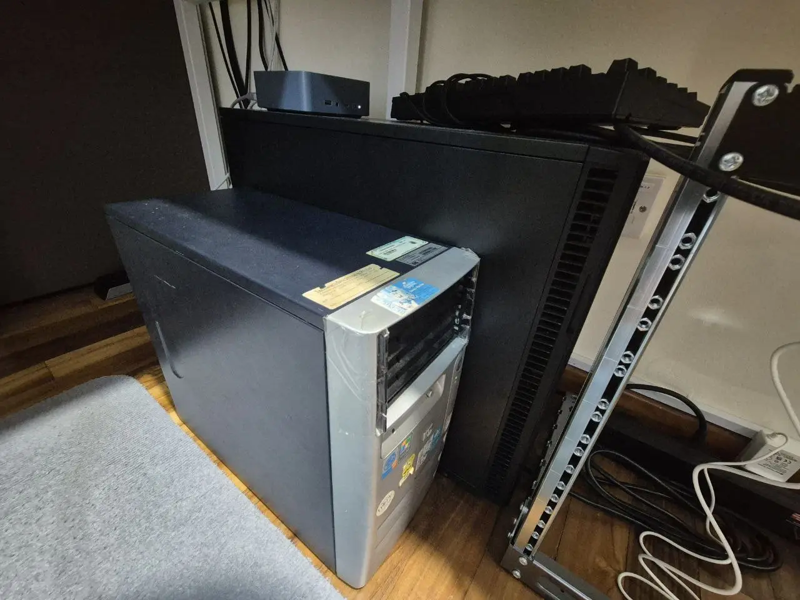

Overview
This is my personal homelab — a self-hosted ecosystem of servers and services for development, media, and experimentation.
Blindly charging into 802.1q (VLANs) was a uniquely painful yet meaningful experience.
May or may not have accidentally nuked the router, zfs pools, DNS, DNS resolution and docker containers at one point or another. Sometimes all of them at the same time.
Also between mismatched memory sticks and NVIDIA cards, I would debug the NVIDIA cards for future problems first. 18 cycles of memory training made little sense, but what was less intuitive to me was disabling CSM (compatability support module) to get a P2200 card to work with the B450M board the Debian server was on.
To be honest, the homelab has been my way of diving headfirst into learning real-world networking and systems architecture outside of formal education, applying and testing concepts I come across.
Currently I am exploring using ansible and terraform to define the states of my lab environment, as well as looking into Jenkins/AWX to run and apply the configurations once pushed to my internal Gitea.

Devices
Homelab Network Architecture
The homelab network is supposed to be logically and physically segmented from the main household (family) network to ensure isolation, control, and scalability. (also so that I can't accidentally take out my family's internet)
I'm not a professional or even trained in networking (at the time of writing 2026, I built this network from scratch through trial and error, googling, and begging ChatGPT/Claude for sources and examples to learn from - have never taken any courses or modules on networking yet).
I do have some plans to test configurations in an EVE-NG VM in my cluster to pre-test configurations and different connections/topologies once I get to importing the network device images. The VM has already been set up end 2025 and looks promising to run hands on tests and break things in a virtualised environment.
Future expansions include hosting this site itself, and other public facing services via VPN tunnel to a proxy VPS for an additional layer of segregation. I have already tested running a VPS proxy to forward and masquerade traffic to a VLAN isolated VM running a Minecraft server, and it seems that the configuration does work for multiple users accessing the server concurrently. Hosting this site from my own servers looks promising based on the minecraft experiment. This should relegate the VPS role to just be an anchor point to forward/receive/masquerade data from my homelab, reduce compute usage to processing traffic, should likely just optimize VPS sourcing for server uptime, network bandwith and throughput.
Physical and Routing seperation
- The Singtel ONR Nokia XS-240X-A router provided by the ISP acts as the default gateway for the family network.
- This router only handles the default
192.168.1.0/24subnet, used for general internet access and connected home devices. - A CAT6 cable connects the ONR's 5GbE port to my MikroTik RB5009UG+S+IN's 2.5GbE port, which functions as the core router for the homelab.
- The MikroTik router does not route traffic from the ONR LAN to the homelab VLANs/subnets, to segment my homelab traffic from home users, preventing outages.
- I have an additional MikroTik CRS310-8G+2S+IN that connects to the RB5009 via DAC over the SFP+ port for a 10GbE trunk, router on stick configuration.
- Accurate as of 24 Dec 2025
Homelab Network Segregation
This section is outdated, I am currently revamping the VLAN mappings - it seems that that there is some edge case with my friends when they VPN in and there is some (or at least I suspect) IP conflict when I use the 192.168.x.x range [I have not validated if this is true, but it seems shifting to the 10.x.x.x range is a valid workaround from testing]
The homelab network consists of multiple VLANs (802.1Q) and corresponding subnets carved out for different purposes. Each VLAN is isolated via tagged switch ports, firewall rules, and interface bindings.
There is a Wireguard tunnel to an external VPS
Although the WireGuard tunnel lands in the 10.0.100.0/24 subnet, I use MikroTik's firewall and routing rules to control what internal VLANs can be accessed. No homelab subnets are exposed directly to the internet.
This was a pain to setup, so I recommend setting aside some time (and then multiply that planned time by 2) to sit down, plan and make sure each device connected via VLAN is properly configured.
| VLAN ID | Name | Subnet | Purpose | Bound Interface |
|---|---|---|---|---|
| 10 | vlan10-servers | 192.168.10.0/24 | Main services (web apps, containers, internal APIs), mostly docker services | ether2 |
| 20 | vlan20-compute | 192.168.20.0/24 | Compute machines (Proxmox VMs) | ether2 |
| 30 | vlan30-NAS | 192.168.30.0/24 | NAS dedicated subnet (ZFS storage, NFS, iSCSI, SMB for homelab) | ether2 |
| 40 | vlan40-management | 192.168.40.0/24 | Management interfaces (IPMI, switch/router management IP) | ether2 |
| 90 | vlan90-internet | 192.168.90.0/24 | WAN access (uplink to Singtel ONR) | ether2 |
| 110 | vlan110-altserv | 192.168.110.0/24 | Alternate server subnet (testing nginx VLAN routing - failure) | ether2 |
| — | wireguard1 | 10.0.100.0/24 | Remote VPN access (WireGuard) | wireguard1 |
| — | bridge | 192.168.200.0/24 | Default bridge (defconf; typically unused / fallback subnet) | bridge |
| — | ISP LAN | 192.168.1.0/24 | Family network (served by Singtel ONR) | ether1 |
These VLANs are managed via:
- A MikroTik router (RB5009) handling DHCP, DNS, and inter-VLAN routing.
- A managed switch (CRS310) for VLAN tagging and link aggregation.
- Firewall rules on the MikroTik to restrict access between VLANs, allowing only essential routes (e.g., certain devices on some VLANs can access NAS; dev VMs cannot access infrastructure).
Remote Access with WireGuard + AdGuard
To access my homelab securely from outside networks, I use WireGuard for VPN tunneling and route all DNS traffic through AdGuard Home, which uses Unbound for encrypted upstream resolution.
Apart from WireGuard which the router innately supports and acts as the server, AdGuard Home and Unbound (and PiHole which acts as a fallback for AdGuard) are uws independent Docker containers with their own IPs through the Debian Server on VLAN 10.
[Client Device]
↓ WireGuard VPN (10.0.100.x)
[MikroTik Router]
↓ VLAN Routing
[AdGuard Home (DNS)]
↓
[Unbound (DoT upstreams)]
WireGuard provides a fast and lightweight tunnel into the 10.0.100.0/24 subnet
(interface wireguard1), routed internally by MikroTik. Each device is manually added via
public key,
and only the WireGuard port (UDP 51820) is exposed to the internet.
All DNS requests over VPN are handled by AdGuard Home, which blocks ads, trackers, telemetry, and malware. It forwards queries to Unbound, which uses DNS-over-TLS (DoT) to upstream providers. This gives me a secure and ad-free browsing experience, even on public Wi-Fi.
With this setup, I can access self-hosted services like Proxmox, TrueNAS, Gitea, and Docker UIs from anywhere, without exposing them to the public internet.
On my phone, the WireGuard tunnel is permanently active — traffic is always routed through my
homelab.
On my Windows laptop, I toggle the connection using the WireGuard GUI client.
On Linux, I manage it using wg-quick for a minimal CLI-based approach.
Homelab Upgrade Roadmap
While the current homelab setup is stable and operational, I have a long-term roadmap focused on scalability, service uptime, physical infrastructure, and secure external access. This roadmap is driven by experimentation, curiosity, and a desire to reduce failure domains while staying in control of every service.
Physical Infrastructure
- Considering a migration from the current 10U MikroTik SR-10U to a 20-40u 1000mm depth rack for improved airflow and cable management. Looking at some 800x1000mm 36u rack to fit forseable hardware needs.
- Add a rack-mounted UPS to prevent data loss and allow for graceful shutdowns across critical services during power outages. Possibly using NUT to control the UPS behaviour
- Building a central permament 2-4u virtualisation server using either a Rome or Milan chip to take advantage of the enterprise/datacenter hardware decomissioning cycle (hope DDR4 rdimm becomes cheaper in bulk).
- Additional 1-4u servers based on needs, like NAS expansion, dedicated public facing services server, more proxmox nodes for HA (consensus voting)
- Standardize rack layout with proper labeling, patch panels, and side/rear cable routing.
- When the enterprise upgrade/decomission cycle for LTO-8 is due, I plan to add an additional layer of tape archives on top of my NAS, to keep them in a different format and for long term storage.
Network Upgrades
- Complete migration to the MikroTik RB5009UG+S+IN as the core router with VLAN-aware firewall rules and faster routing capacity.
- Consider an upgraded Router after the RB5009 like the CCR2004 or entierprise switches
- Look into replacing the generic 2.5Gbps switch with MikroTik CRS-series switches for better VLAN tagging, consistency, and monitoring.
- Subscribe to a 10Gbps fiber plan to fully utilize RB5009’s capabilities and reduce upstream bottlenecks.
External Access & Security
- Deploy a VPS-based reverse proxy (e.g., Hetzner) to tunnel traffic into the homelab via WireGuard.
- Look into dedicated firewall devices, both enterprise (e.g. Cisco, Fortinet) and open-source (e.g. OPNsense, pfSense) (or even the forbidden virtualised firewall route)
- Self-host selected services (e.g.Gitea, Jellyfin, dashboards, email) via subdomains routed through the VPS.
- Ensure all outbound traffic from sensitive services like qBittorrent pass through a VPN killswitch using NordVPN to avoid IP leaks.
- Begin exploring Zero Trust architecture for access control, identity-based access, and device trust posture enforcement.
- Maybe consider looking into hardware authentication for access control as well
Service Architecture
- Increase use of Proxmox for service separation via LXC containers and VMs.
- Move toward either Docker Swarm or consider Kubernetes (K3s) to maintain consistent uptime, make service recovery easier, and support future scaling.
- Break out critical services (AdGuard, Unbound, monitoring tools) onto a dedicated Raspberry Pi 5 for higher availability and role separation.
Philosophy: One Purpose per Device vs General Purpose
- Borrowing from the UNIX philosophy of "Write programs that do one thing and do it well."
- Experimenting with a philosophy of one device per critical role (DNS, VPN, monitoring) for fault isolation and simplicity.
- In parallel, maintain general-purpose nodes (e.g., Proxmox or Docker hosts) for scalable, fast-to-deploy services.
- This approach should balance resource efficiency with clean service boundaries.